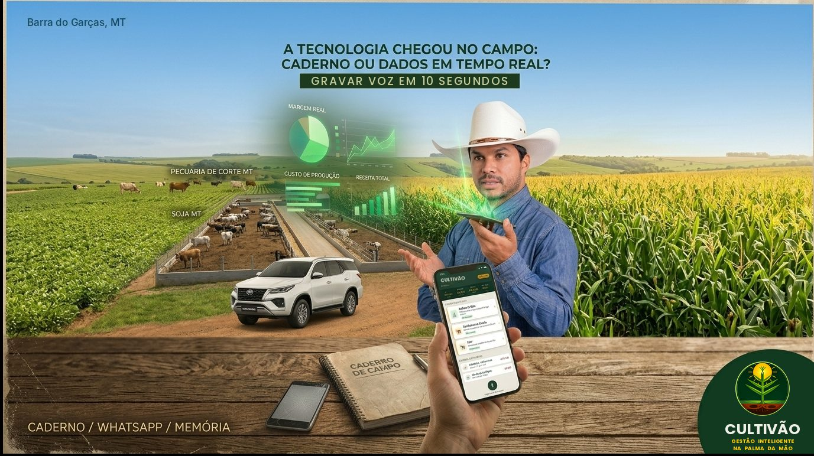

CULTIVÃO
O aplicativo que troca o caderno de campo por dados em tempo real. Análise de solo, pecuária, reprodução e finanças da fazenda em um só lugar, pensado para o produtor rural do Cerrado.

Tudo o que sua fazenda precisa, sem planilha e sem caderno
Cálculos baseados em referências técnicas precisas e relatórios prontos para compartilhar.
Análise de Solo
Interpretação da análise e recomendação de calagem e adubação com base nas recomendações técnicas da Embrapa Cerrado.
Pecuária
Confinamento, recria e manejo de lotes: custo por arroba, conversão alimentar e margem por animal.
IATF
Planejamento da estação de monta com inseminação artificial em tempo fixo, agenda de protocolos e lembretes.
Lançamentos por voz
Registre receitas e despesas falando, em segundos, direto do campo.
Análise Financeira
Raio-X da fazenda: receita, custeio, margem real e alocação dos recursos.
Relatórios em PDF
Relatórios técnicos prontos para enviar ao agrônomo, ao veterinário ou ao engenheiro projetista no pré-cadastro de crédito rural.
Como funciona
Simples como Anotar no Caderno, e com opção de Registros por Voz.
Informe os dados
Digite ou fale os números da análise de solo, do lote ou do lançamento financeiro.
Receba a recomendação
O Cultivão calcula, interpreta e mostra o resultado de forma clara, na hora.
Compartilhe e decida
Gere o relatório em PDF, compartilhe com sua equipe e acompanhe o histórico da fazenda.
Quer participar dos testes?
O Cultivão está em fase de testes com produtores e estudantes de Agrárias. Entre na lista de espera ou fale conosco e receba o convite.